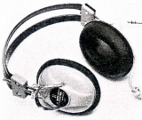
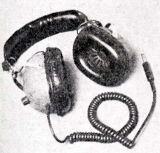
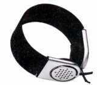
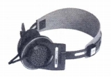

MITSUBISHI（ミツビシ）/DIATONE（ダイヤトーン）
三菱電機のオーディオブランド。スピーカーシステムでは長い歴史を誇り、NHK他の業務用システムやフルレンジユニット・P-610系列で有名。しかし市販のコンポーネントステレオとしては1960年代末頃参入した。1999年に一度カーオーディオを除く民生用オーディオスピーカーから撤退し、2005年になって三菱電機エンジニアリングが本ブランド製品を再登場させた。
ヘッドフォンについては、1970年頃は「ミツビシ」ブランドで販売していた。手元で確認できる範囲では、1973年には「ダイヤトーン」ブランドに切り替わっている。しかし自主的な開発を行った形跡はあまり無く、エレガ等からOEM調達したと思われる機種を販売していた。
なお1987年〜1991年の赤井電機との合同ブランド 、A&Dのヘッドフォンについては「アカイ」のページで掲載している。（ただし、ヘッドフォンの型番、「SH」はダイヤトーンのものを使用している。）
�T.ミツビシブランドのモデル

�U.ダイヤトーンブランドのモデル
（1970年代前半） SH-75 SH-85 （4ch機） SH-95

(SH-75)

(SH-30)

(SH-55)
＊SH-35について豊永尚輝 氏所有機の画像を使用しました。ありがとうございます。
＊MITSUBISHI（ミツビシ）/DIATONE（ダイヤトーン）ブランドのその他のヘッドフォンではSH-100、101、108Gをネットオークションで見かけた。これらの詳細は不明。SH-100、101はミツビシ名義の製品でSH-100については白い個体と赤い個体を見かけた。SH-108Gはダイヤトーン名義の製品。ボリュウム付きの機体だった。